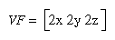

This appendix describes how to calculate normal vectors for surfaces. You need to define normals to use the OpenGL lighting facility, which is described in Chapter 5. "Normal Vectors" in Chapter 2 introduces normals and the OpenGL command for specifying them. This appendix goes through the details of calculating them. It has the following major sections:
Since normals are perpendicular to a surface, you can find the normal at a particular point on a surface by first finding the flat plane that just touches the surface at that point. The normal is the vector that's perpendicular to that plane. On a perfect sphere, for example, the normal at a point on the surface is in the same direction as the vector from the center of the sphere to that point. For other types of surfaces, there are other, better means for determining the normals, depending on how the surface is specified.
Recall that smooth curved surfaces are approximated by a large number of small flat polygons. If the vectors perpendicular to these polygons are used as the surface normals in such an approximation, the surface appears faceted, since the normal direction is discontinuous across the polygonal boundaries. In many cases, however, an exact mathematical description exists for the surface, and true surface normals can be calculated at every point. Using the true normals improves the rendering considerably, as shown in Figure E-1. Even if you don't have a mathematical description, you can do better than the faceted look shown in the figure. The two major sections in this appendix describe how to calculate normal vectors for these two cases:
Finding Normals for Analytic Surfaces
Analytic surfaces are smooth, differentiable surfaces that are described by a mathematical equation (or set of equations). In many cases, the easiest surfaces to find normals for are analytic surfaces for which you have an explicit definition in the following form:
V(s,t) = [ X(s,t) Y(s,t) Z(s,t) ]
where s and t are constrained to be in some domain, and X, Y, and Z are differentiable functions of two variables. To calculate the normal, find
which are vectors tangent to the surface in the s and t directions. The cross product
is perpendicular to both and, hence, to the surface. The following shows how to calculate the cross product of two vectors. (Watch out for the degenerate cases where the cross product has zero length!)
You should probably normalize the resulting vector. To normalize a vector [x y z], calculate its length
and divide each component of the vector by the length.
As an example of these calculations, consider the analytic surface
V(s,t) = [ s2 t3 3-st ]
From this we have
So, for example, when s=1 and t=2, the corresponding point on the surface is (1, 8, 1), and the vector (-24, 2, 24) is perpendicular to the surface at that point. The length of this vector is 34, so the unit normal vector is (-24/34, 2/34, 24/34) = (-0.70588, 0.058823, 0.70588).
For analytic surfaces that are described implicitly, as F(x, y, z) = 0, the problem is harder. In some cases, you can solve for one of the variables, say z = G(x, y), and put it in the explicit form given previously:
Then continue as described earlier.
If you can't get the surface equation in an explicit form, you might be able to make use of the fact that the normal vector is given by the gradient
evaluated at a particular point (x, y, z). Calculating the gradient might be easy, but finding a point that lies on the surface can be difficult. As an example of an implicitly defined analytic function, consider the equation of a sphere of radius 1 centered at the origin:
x2 + y2 + z2 - 1 = 0 )
This means that
F (x, y, z) = x2 + y2 + z2 - 1
which can be solved for z to yield
Thus, normals can be calculated from the explicit form
as described previously.
If you could not solve for z, you could have used the gradient

as long as you could find a point on the surface. In this case, it's not so hard to find a point - for example, (2/3, 1/3, 2/3) lies on the surface. Using the gradient, the normal at this point is (4/3, 2/3, 4/3). The unit-length normal is (2/3, 1/3, 2/3), which is the same as the point on the surface, as expected.
Figure E-2 : Averaging Normal Vectors
To find the normal for a flat polygon, take any three vertices v1, v2, and v3 of the polygon that do not lie in a straight line. The cross product
[v1 - v2] ´
[v2 - v3]
is perpendicular to the polygon. (Typically, you want to normalize the resulting vector.) Then you need to average the normals for adjoining facets to avoid giving too much weight to one of them. For instance, in the example shown in Figure E-2, if n1, n2, n3, and n4 are the normals for the four polygons meeting at point P, calculate n1+n2+n3+n4 and then normalize it. (You can get a better average if you weight the normals by the size of the angles at the shared intersection.) The resulting vector can be used as the normal for point P.
Sometimes, you need to vary this method for particular situations. For instance, at the boundary of a surface (for example, point Q in Figure E-2), you might be able to choose a better normal based on your knowledge of what the surface should look like. Sometimes the best you can do is to average the polygon normals on the boundary as well. Similarly, some models have some smooth parts and some sharp corners (point R is on such an edge in Figure E-2). In this case, the normals on either side of the crease shouldn't be averaged. Instead, polygons on one side of the crease should be drawn with one normal, and polygons on the other side with another.